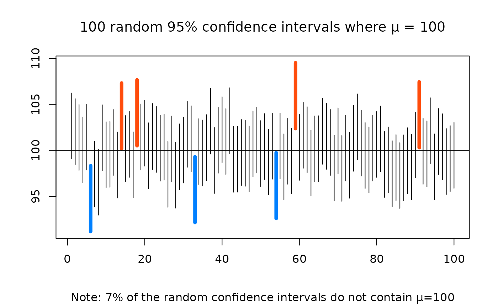

Confidence Interval Simulation Program
This program simulates random samples from which it constructs confidence intervals for one of the parameters mean (Mu), variance (Sigma), or proportion of successes (Pi).
CIsim(samples = 100, n = 30, mu = 0, sigma = 1, conf.level = 0.95, type = "Mean")
Arguments
| samples | the number of samples desired. |
|---|---|
| n | the size of each sample. |
| mu | if constructing confidence intervals for the population mean or
the population variance, mu is the population mean (i.e., type is one of
either |
| sigma | the population standard deviation. |
| conf.level | confidence level for the graphed confidence intervals, restricted to lie between zero and one. |
| type | character string, one of |
Value
Graph depicts simulated confidence intervals. The number of confidence intervals that do not contain the parameter of interest are counted and reported in the commands window.
Details
Default is to construct confidence intervals for the population mean. Simulated confidence intervals for the population variance or population proportion of successes are possible by selecting the appropriate value in the type argument.
Examples
CIsim(100, 30, 100, 10)#> 6 % of the random confidence intervals do not contain Mu = 100 .# Simulates 100 samples of size 30 from # a normal distribution with mean 100 # and standard deviation 10. From the # 100 simulated samples, 95% confidence # intervals for the Mean are constructed # and depicted in the graph. CIsim(100, 30, 100, 10, type="Var")#> 8 % of the random confidence intervals do not contain Var = 100 .# Simulates 100 samples of size 30 from # a normal distribution with mean 100 # and standard deviation 10. From the # 100 simulated samples, 95% confidence # intervals for the variance are constructed # and depicted in the graph. CIsim(100, 50, .5, type="Pi", conf.level=.90)#> 9 % of the random confidence intervals do not contain Pi = 0.5 .# Simulates 100 samples of size 50 from # a binomial distribution where the population # proportion of successes is 0.5. From the # 100 simulated samples, 90% confidence # intervals for Pi are constructed # and depicted in the graph.